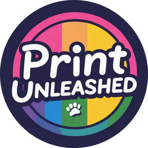

Trade Mark Journal No.2026/012 20 March 2026
UK00004338756 10 February 2026 (18,25)

- Class 18
- Tote bags; Grocery tote bags; Cross-body bags; Crossbody bags; Drawstring bags; Bags; Canvas bags; Canvas shopping bags; Messenger bags; Beach bags; Gym bags; Toiletry bags sold empty; Makeup bags; Book bags.
- Class 25
- Clothing; Jackets [clothing]; Shorts [clothing]; T-shirts; Short-sleeved T-shirts; Printed t-shirts; Tee-shirts; Sweat shirts; Hooded sweat shirts; Polo shirts; Sweatshirts; Sweatpants; Moisture-wicking sports shirts; Sport shirts; Sports shirts; Hooded sweatshirts; Hoodies; Sweat pants; Jogging bottoms; Jogging bottoms [clothing]; Jogging tops; Tracksuit bottoms; Yoga bottoms; Sweat bottoms; Jogging pants; Jogging outfits; Stretch pants; Jogging sets [clothing]; Gym shorts; Lounge pants; Vest tops; Coats (Top -); Vests; Baselayer tops; Tracksuit tops; Long sleeved vests; Running vests; Tops [clothing]; Shell jackets; Sports vests; Athletics vests; Caps; Caps [headwear]; Caps being headwear; Bucket caps; Baseball caps; Baseball caps and hats; Peaked caps; Bucket hats.
Marie Tuck